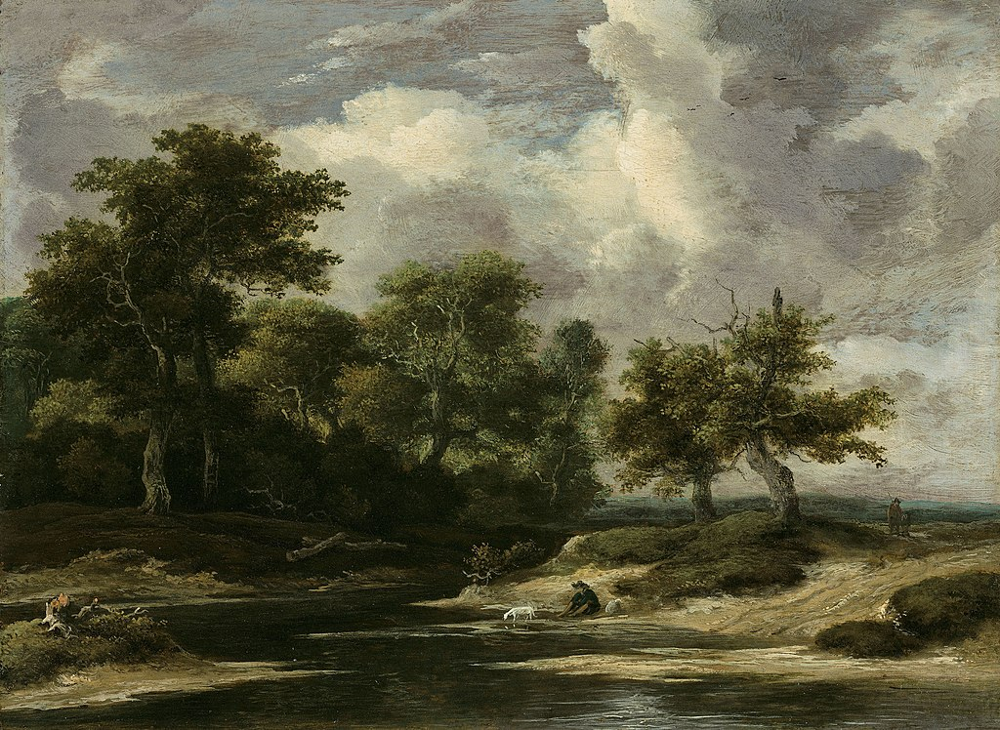
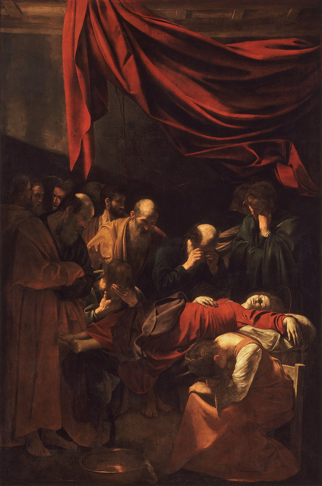
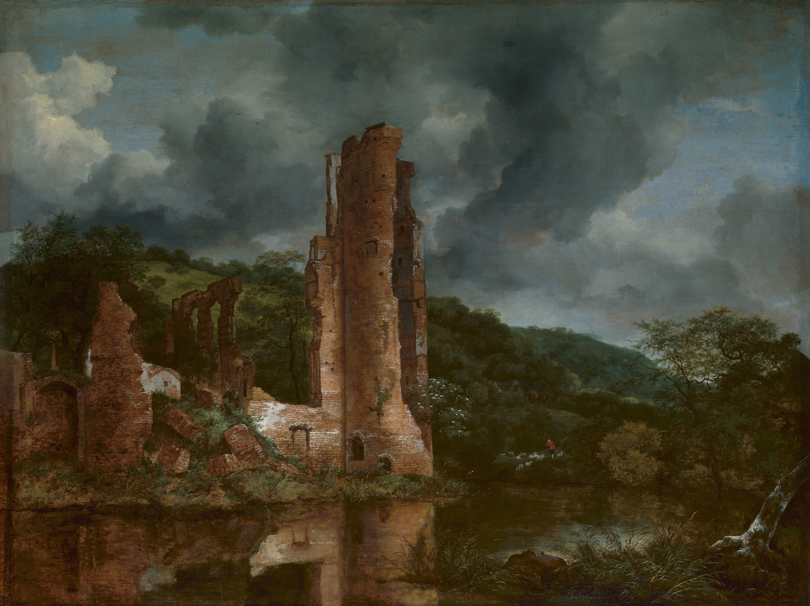
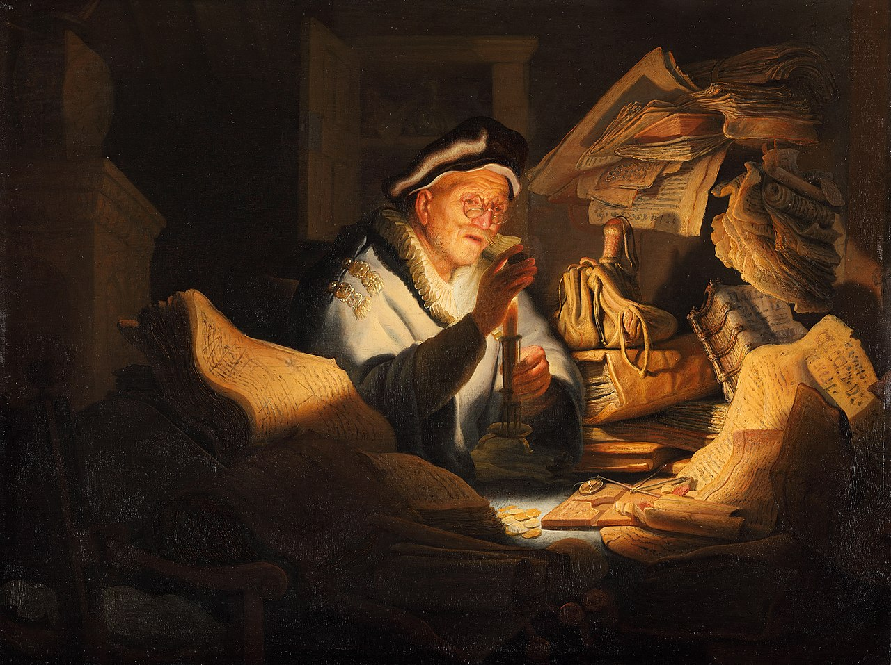
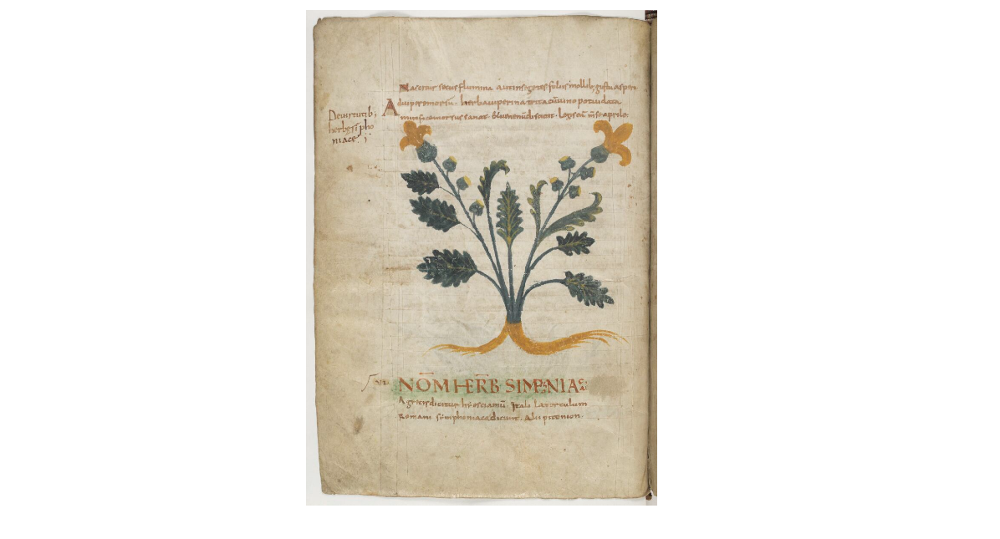
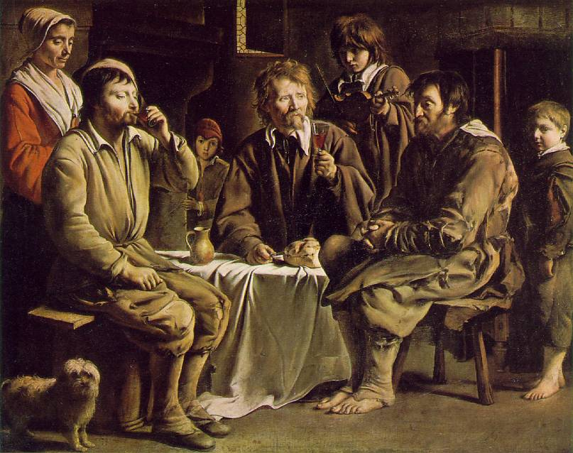
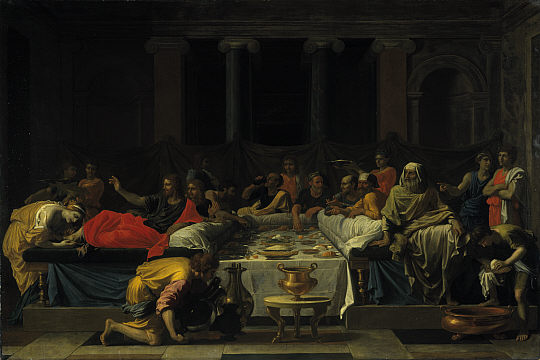
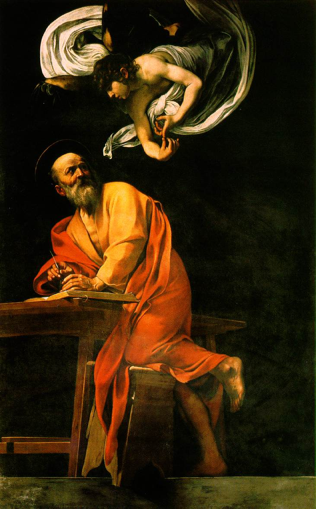
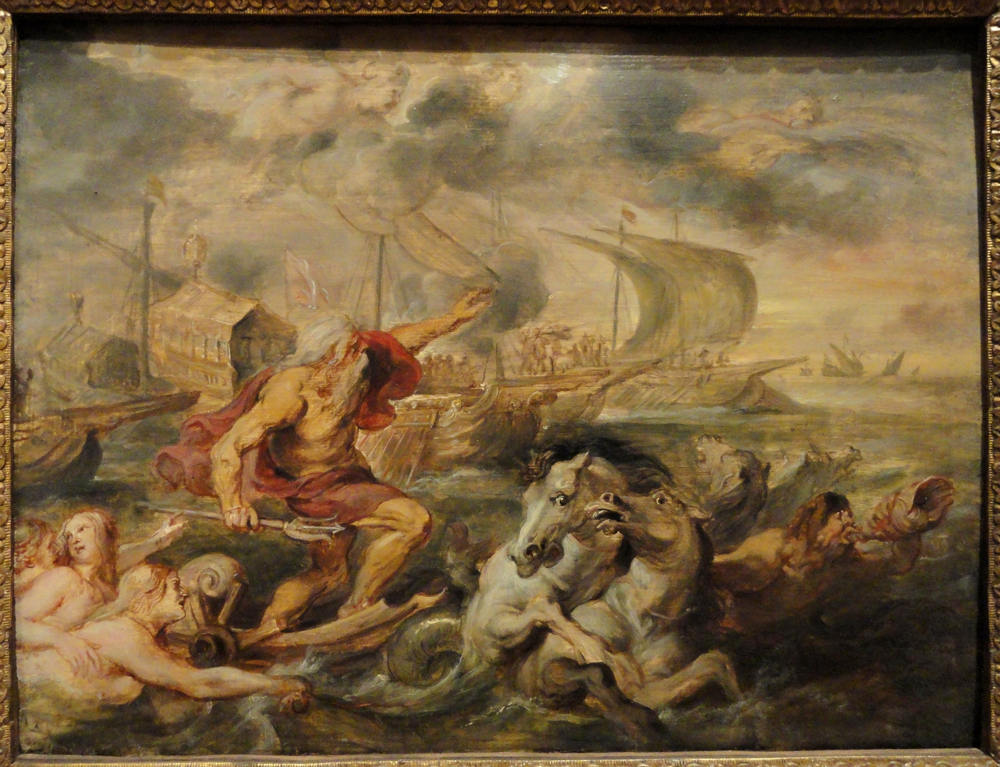

1024px-Jacob_van_Ruisdael_-A_wooded_river_landscape_with_a_traveller_and_dog-1650s

A MAIDSERVANT POURING MILK Jan Vermeer c. 1660

A NAKED WOMAN SEATED ON A MOUND. By Rembrandt, c. 1631
 by Michael Sweerts.jpg)
A Young Maidservant (c. 1660) by Michael Sweerts

ANDROMEDA. By Peter Paul Rubens, c. 1638-40
THE FLIGHT INTO EGYPT. By Adam Elsheimer, 1609.jpg)
Adam_Elsheimer_-_Die_Flucht_nach_Ägypten_(Schloss_Weißenstein)THE FLIGHT INTO EGYPT. By Adam Elsheimer, 1609

ANDREA FLAMINIA. By Vignola, 1550-53

BALDACCHINO. By Gian Lorenzo Bernini. 1624-33

BASKET OF FRUIT. By Caravaggio grap 1596

Bernini Santa_teresa

CALLING OF ST MATTHEW. By Caravaggio, c. 1598-1600

CARDINAL DE BOUILLON. By Hyacinthe Rigaud, 1708

Chaos_in_the_aftermath_of_battle_with_the_dead_and_wounded_b_Wellcome_V0015782_Georg Philipp Rugendas

CHRIST OF CLEMENCY. By Juan Martinez Montañés , 1603-6
. By Gian Lorenzo Bernini, 1623-4.jpg)
DAVID (detail). By Gian Lorenzo Bernini, 1623-4

Death_of_the_Virgin-Caravaggio_(1606)

DOMESTIC SCENE. By Annibale Carracci, c. 1585

Estasi di Santa Teresa-cappella-cornaro.

Gerrit Dou, The Young Mother, 1658

hendrick_goltzius_dune_landscape_haarlem 1603

Jacob van Ruisdael’s etching, “The Great Beech with Two Men and a Dog”, c. 1651–55

Jacob_van_Ruisdael_-_Landscape_with_the_Ruins_of_the_Castle_of_Egmond

JUPITER Galleria Carracci, 1597-1600

LANDSCAPE WITH DIOGENES. By Nicolas Poussin, 1648

LANDSCAPE WITH THE FLIGHT INTO EGYPT. By Annibale Carracci, c. 1604

MILO OF CROTONA. By Pierre Puget. 1671-82

Money_Changer_Der_Geldwechsler_-_Gemäldegalerie_Berlin_-_1627

NEPTUNE FOUNTAIN By Bartolomeo Ammanati 1560
THE ARCADIAN SHEPHERDS 1640.jpg)
Nicolas_Poussin_-_Et_in_Arcadia_ego_(deuxième_version)THE ARCADIAN SHEPHERDS 1640

Outlook-y00jht3u

Peasant-Meal-Le-Nain-Louis-1642

PEASANTS FIGHTING OVER CARDS. By Adriaen Brouwer. c. 1632
.jpg)
Peter_Paul_Rubens_-_Descent_from_the_cross_(1617)

S. ANDREA AL QUIRINALE. By Gian Lorenzo Bernini. 1658-70 1

S. ANDREA AL QUIRINALE. By Gian Lorenzo Bernini. 1658-70 2

Sacrament_of_Penance_II_(1647)_Nicolas_Poussin

SALT-CELLAR. By Georg Petel, c. 1627-8

SELF-PORTRAIT, OPEN-MOUTHED AND STARING. By Rembrandt, 1630

STUDIES OF HEADS, WITH SASKIA ILL IN BED. By Rembrandt, c. 1641-2

THE ALLOCUTION OF CONSTANTINE. By Peter Paul Rubens, 1622

THE COSIMO PANEL. By Grinling Gibbons, 1682

THE DEPOSITION By Francesco Salviati 1547
. By Diego Velazquez 1628-9.jpg)
THE DRINKERS (THE TRIUMPH OF BACCHUS). By Diego Velazquez 1628-9

THE FALL OF TANTALUS. By Hendrick Goltzius after Cornelis van Haarlem. 1588

THE FARNESE GALLERY. By Annibale Carracci and assistants, c. 1597-1604

THE FOUNTAIN OF THE FOUR RIVERS - Gian Lorenzo Bernini 1648-51

THE MARTYRDOM OF ST BARTHOLOMEW. By Guercino, c. 1636

THE MERRY COMPANY. By Gerrit van Honthorst. 1620

THE RETURN OF THE PRODIGAL SON. By Rembrandt, c. 1642

THE SUPPER AT EMMAUS. By Rembrandt 1648

THE VOYAGE OF PRINCE FERDINAND FROM BARCELONA TO GENOA. By Peter Paul Rubens, 1634-sketch

The_Inspiration_of_Saint_Matthew_by_Caravaggio

The_Voyage_of_the_Cardinal_Infante_Ferdinand_of_Spain_from_Barcelona_to_Genoa_in_April_1633,_with_Neptune_Calming_the_Tempest,_by_Peter_Paul_Rubens,_1635_-_Fogg_Art_Museum_-_DSC02322.JPG
. By Simon de Passe, 1620.webp)
TITLE-PAGE OF FRANCIS BACON'S INSTAURATIO MAGNA (NOVUM ORGANUM). By Simon de Passe, 1620.

TRUTH UNVEILED. By Gian Lorenzo Bernini. 1646-52

VENUS AND ADONIS. By Peter Paul Rubens, c. 1635

Raoul Hausmann mechanical-head 1920

Daniël de Blieck - Alexander Slaying Cleitus